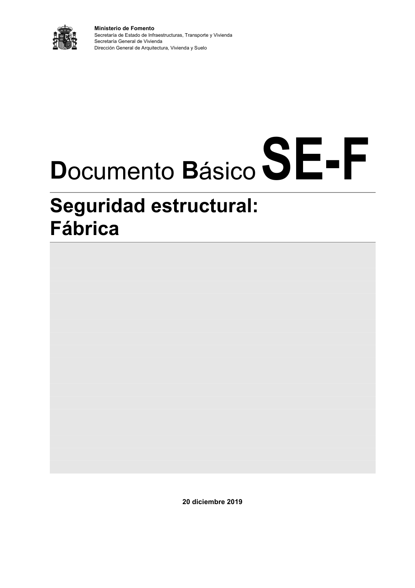

DB-SE-F · Página 1 · versión 2019-12-20
SHA256: e3e0805c3b4c307519c26dc34c3fdbf143d842edd013c91b0f52d2c73403d91c · página física 1 de 70 · métodos de encabezado
solo si están cotejados.
Formatos: Markdown · JSON de bloques · PDF p. 1 · imagen PNG
Ministerio de Fomento Secretaría de Estado de Infraestructuras, Transporte y Vivienda Secretaría General de Vivienda Dirección General de Arquitectura, Vivienda y Suelo 20 diciembre 2019 Documento Básico SE-F Seguridad estructural: Fábrica
